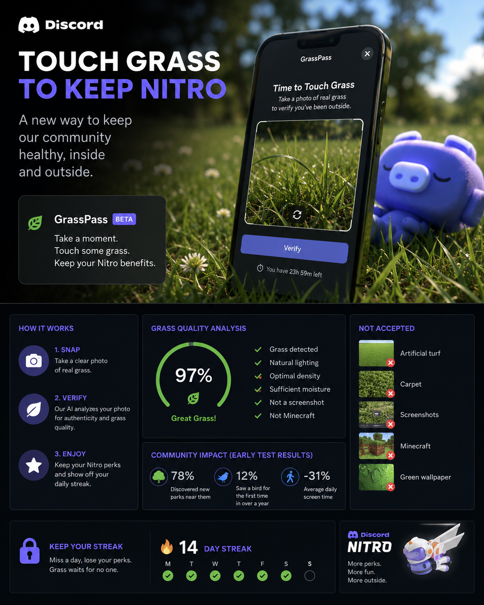

Selon plusieurs sources proches du dossier, Discord mènerait actuellement une phase d'expérimentation autour d'un nouveau système destiné aux abonnés Nitro.
Le programme, baptisé en interne GrassPass, demanderait aux utilisateurs de prendre une photo d'herbe réelle toutes les 24 heures afin de conserver certains avantages premium.
Une intelligence artificielle analyserait ensuite la densité du gazon, la couleur, l'humidité apparente et un mystérieux indice appelé « énergie végétale globale ».
0
testeurs fictifs
0
% ont trouvé un parc
0
% ont vu un oiseau
Une IA très exigeante
Le système aurait été entraîné pour détecter les tentatives de fraude : captures d'écran, pelouses artificielles, tapis verts ou encore images Minecraft.
Réactions des utilisateurs
Interview fictive
« J'ai essayé avec une plante en plastique. L'IA m'a répondu que mon herbe manquait d'émotion. »
La prochaine étape ?
Une version avancée demanderait même aux utilisateurs de toucher de l'herbe pendant trois secondes chaque semaine.
Commentaires
Mon abonnement Nitro vient de perdre contre une pelouse.
Il y a 8 minJe pensais que c'était impossible de sortir moins qu'avant.
Il y a 17 min